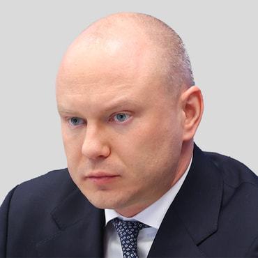

Company profile · РОЙ.МАРКЕТ investigation
At a glance
Ownership & corporate history
| Value | As of | Note |
|---|---|---|
| Яныкина Нина Олеговна | 2025-12-16 | GRN 2257724392760 — became GD 16.12.2025, per ЦБСТ's own full signed EGRUL extract (pulled 15.08.2026). [s0228] |
| Value | As of | Note |
|---|---|---|
| Фонд «Наша Правда» | 2024-02-27 | co-founder from inception, ИНН 9705196180. [s0228] |
| ПАО «Банк ПСБ» | 2025-04-01 | GRN 2257715371901 — joined as second founder 01.04.2025. [s0228] |
| Value | As of | Note |
|---|---|---|
| 129110, Москва, пер. Банный, д. 3, помещ. 208 | 2024-02-27 | [s0228] |
Sanctions & screening
[s0574]
Web & social presence
Principals & persons of interest

Open questions
Sources cited in this profile
| ID | Type | Locator | Captured | As of |
|---|---|---|---|---|
| s0228 | EGRUL extract | EGRUL extract (ul-1247700190430-20260815005804.pdf) | — | 2026-08-15 |
| s0572 | EGRUL open-API record | EGRUL open-API record (EGRULAPI_7100032961_20260824_ooo-tsentr-bespilotnykh-sistem-tula.json) | 2026-08-24 | 2026-08-24 |
| s0574 | OpenSanctions screening record | OpenSanctions screening record (OPENSANCTIONS_9702064851_20260824_ano-tsbst-centre-for-unmanned-systems-technologies.json) | 2026-08-24 | — |
| s0970 | GUR war-sanctions record | GUR war-sanctions record (GUR_20260824_delta-cbts611000-sample1.html) | 2026-08-24 | — |
Generated from this investigation's registry (data/registry/) by scripts/build_company_profile.py. Not a substitute for reading the underlying primary sources listed above.